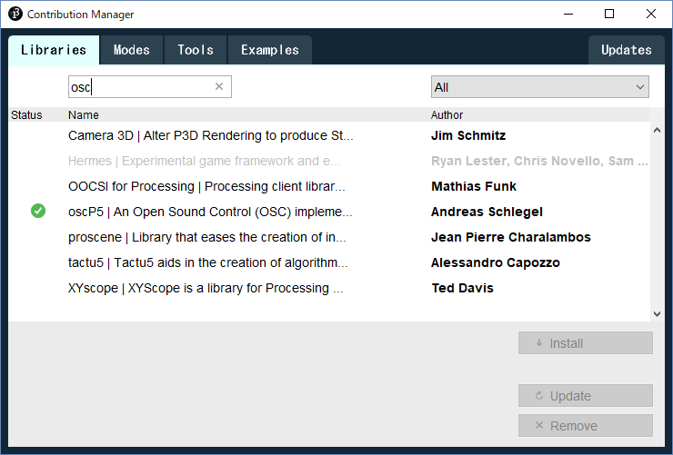
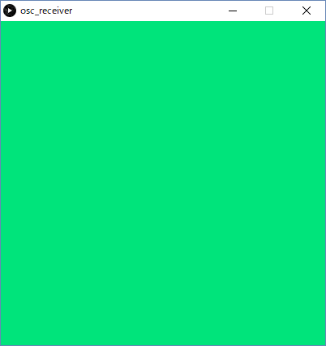
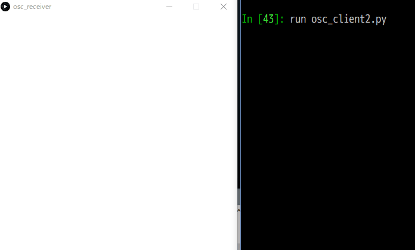

Open Sound ControlでPythonとProcessing間の連携をやってみた
January 28, 2018
メディアアート開発の際， OpenCV for Pythonを用いた画像解析で映像から情報を抽出し， Processingで作った映像にその情報を反映したいというようなシチュエーションがある． OpenCVならProcessingにもライブラリはあるが， 画像解析に関する試行錯誤はJupyter NotebookやSpyder IDEのあるPythonの方がやりやすい． そこで，PythonとProcessingの両方の良いところを活かすために Open Sound Control (OSC) による両者の連携を実装してみる．
環境
この記事で使うPythonとProcessingの環境は以下の通り．
- Python 3.6.3 (Anaconda)
- Processing 3.3.6
- OpenCV 3.3.0
Open Sound Control (OSC)
OSCに関する説明は以下の記事が非常にわかりやすい．
Processing Libraries 3 : oscP5 – OSCによるアプリケーション間通信 | yoppa.org
oscP5 : ProcessingでOSCを扱えるようにするライブラリ
ProcessingではoscP5 (https://github.com/sojamo/oscp5)というライブラリをインストールすることでOSCを使うことができる．
oscP5は以下のようにContribution Managerからインストール可能である．
この記事ではバージョン0.9.9のものを用いた．

python-osc : PythonでOSCを扱えるようにするモジュール
Pythonではpython-osc (https://github.com/attwad/python-osc) というモジュールをインストールすれば使うことができる．
インストールは下記のようにpipコマンドで出来る．
この記事ではバージョン1.6.4のものを用いた．
pip install python-osc
まずは簡単な命令の送受信を試す
通信ができないことには画像解析との連携は無理なので， まずは簡単な命令のやりとりをPythonだけで作ってみる（まだProcessingは使わない）．
例として，クライアントからRGB形式で表した色の情報をサーバで受信し，その内容をコンソールに表示してみる． クライアント側とサーバ側のプログラムはそれぞれ以下のようになる：
クライアント側
# -*- coding: utf-8 -*-
from pythonosc import udp_client
from pythonosc.osc_message_builder import OscMessageBuilder
IP = '127.0.0.1'
PORT = 6700
# UDPのクライアントを作る
client = udp_client.UDPClient(IP, PORT)
# /colorに送信するメッセージを作って送信する
msg = OscMessageBuilder(address='/color')
msg.add_arg(0)
msg.add_arg(228)
msg.add_arg(123)
m = msg.build()
client.send(m)
サーバ側
# -*- coding: utf-8 -*-
from pythonosc import osc_server
from pythonosc.dispatcher import Dispatcher
def color_handler(unused_addr, red, green, blue):
""" 値を受信したときに行う処理 """
print(f'received color : ({red}, {green}, {blue})')
IP = '127.0.0.1'
PORT = 6700
# URLにコールバック関数を割り当てる
dispatcher = Dispatcher()
dispatcher.map('/color', color_handler)
# サーバを起動する
server = osc_server.ThreadingOSCUDPServer((IP, PORT), dispatcher)
print(f'Serving on {server.server_address}')
server.serve_forever()
ProcessingでOSCによる通信を受け取る
受信した色をウインドウの色に反映する
次に受信側のプログラムをProcessingで書いてやる． 受信したテキストをただコンソールに垂れ流すだけでは面白くないので，ウインドウの背景を受信した色に変更するようにしてみる．
ProcessingでOSCによる通信を受信するプログラム
import netP5.*;
import oscP5.*;
OscP5 osc;
color bg;
void setup() {
size(400, 400);
// OSCの初期化 (受信ポートは6700に設定する)
osc = new OscP5(this, 6700);
// デフォルトの背景を白にしておく
bg = color(255, 255, 255);
}
void draw() {
background(bg);
}
void oscEvent(OscMessage msg) {
// アドレス /color に色を受信したら，それを背景に設定する
if (msg.checkAddrPattern("/color")) {
int r = msg.get(0).intValue();
int g = msg.get(1).intValue();
int b = msg.get(2).intValue();
bg = color(r, g, b);
}
}
ここで，送信側のPythonのプログラムには特に変更は無いが，送信先のポート番号は受信側のポート番号と揃えておくこと．
以下の画像が受信の結果．ウインドウの背景が色 (0, 228, 123) になってる．

ランダムな色を送信する
送信側のプログラムを改造して，ランダムな色をたくさん送りつけるようにする．
Pythonでランダムに色を送信するプログラム
# -*- coding: utf-8 -*-
import random
import time
from pythonosc import udp_client
from pythonosc.osc_message_builder import OscMessageBuilder
IP = '127.0.0.1'
PORT = 6700
# UDPのクライアントを作る
client = udp_client.UDPClient(IP, PORT)
for k in range(10):
msg = OscMessageBuilder(address='/color')
msg.add_arg(random.randint(0, 255))
msg.add_arg(random.randint(0, 255))
msg.add_arg(random.randint(0, 255))
m = msg.build()
print(m.address, m.params)
client.send(m)
time.sleep(0.5)
実行結果は以下の通り．左側がProcessingのウインドウで右側がPythonのコンソールである． 0.5秒間隔でランダムに送信した色がProcessing側に反映されていることがわかる．

画像解析とアートを組み合わせる例：Pythonで計算した色ヒストグラムの情報をProcessingで作ったアートに反映する
OSCをPythonとProcessingで扱うサンプルをみてきたので，いよいよ本題の画像解析との連携を行う． あまり複雑な問題にすると記事が長くなりそうなので簡単な画像解析の例として， カメラの映像に入ってきた物体の色を取得してProcessing側に送信するタスクを考える．
とりあえずカメラの映像を取得する
自前のプログラムからカメラの映像をとれないことには何も始まらないので，まずはカメラを動かすプログラムを書く．
Pythonからカメラの映像を取得・表示するプログラム
# -*- coding: utf-8 -*-
import numpy as np
import cv2
video = cv2.VideoCapture(0)
cv2.namedWindow('camera view', cv2.WINDOW_NORMAL)
while True:
ok, frame = video.read()
if not ok:
break
cv2.imshow('camera view', frame)
key = cv2.waitKey(10)
if key == ord('q'):
break
video.release()
cv2.destroyAllWindows()
このプログラムを実行すると以下のようにウインドウに撮影された画像が表示される．
qキーを叩けば終了する．

映像取得プログラムに色情報抽出・送信処理をくっつける
上記の映像取得プログラムに色情報の抽出処理を加えることを考える． 画面に映った物体の色をおおまかにとるなら色チャネルごとの平均を求めれば良さそうな気がするが， それだけだとテーブルの色に値がひっぱられて綺麗に色をとることができない． そこで，画面内の彩度が高い部分のみを取り出すマスクを大津の2値化で作り， そのマスクを利用して彩度の高い色の平均を求め，Processing側に送信する．
彩度の高い部分のみの平均を求めて送信するプログラム
# -*- coding: utf-8 -*-
import numpy as np
from scipy import signal
import cv2
from pythonosc import udp_client
from pythonosc.osc_message_builder import OscMessageBuilder
IP = '127.0.0.1'
PORT = 6700
# UDPのクライアントを作る
client = udp_client.UDPClient(IP, PORT)
video = cv2.VideoCapture(0)
def send_color(r, g, b):
""" 引数で渡された色をProcessing側に送信する """
msg = OscMessageBuilder(address='/color')
msg.add_arg(r)
msg.add_arg(g)
msg.add_arg(b)
m = msg.build()
print(m.address, m.params)
client.send(m)
cv2.namedWindow('camera view', cv2.WINDOW_NORMAL)
cv2.namedWindow('foreground', cv2.WINDOW_NORMAL)
while True:
ok, frame = video.read()
if not ok:
break
# 入力画像をぼかした画像を取得する
frame_blur = cv2.GaussianBlur(frame, (25, 25), 11)
# ぼかした画像をHSVに変換した画像を取得する
hsv = cv2.cvtColor(frame_blur, cv2.COLOR_BGR2HSV)
# 彩度の大きい部分のみを2値化で取り出す
th, foreground = cv2.threshold(hsv[:, :, 1], 0, 255, cv2.THRESH_OTSU)
foreground_flag = (foreground == 255)
# 色チャネルごとに平均を計算する
bgr_mean = frame_blur[foreground_flag].mean(axis=0)
# 色を送信する（OpenCVの画像はRGBではなくBGRなので注意）
b, g, r = map(int, bgr_mean.round())
send_color(r, g, b)
cv2.imshow('camera view', frame)
cv2.imshow('foreground', foreground)
key = cv2.waitKey(30)
if key == ord('q'):
break
video.release()
cv2.destroyAllWindows()
実行結果は以下の通り． 左側がProcessingの画面，真ん中がカメラの映像，右側が彩度の高い部分を表すマスク画像である． 結果から，カメラの映像に入ってきた本の色に応じてProcessing側の画面を変化させることが実現できていることがわかる．

まとめ
この記事では，PythonとProcessing間の連携を行うために，Open Sound Control (OSC) を用いた処理を実装した．
今回は送受信するデータとして色を扱ったが，もちろんその他のデータをやりとりすることもできる． 例えば，送信側は座標を送信し，受信側は受信した位置に対して図形を描画する，といった表現も可能であると考えられる．